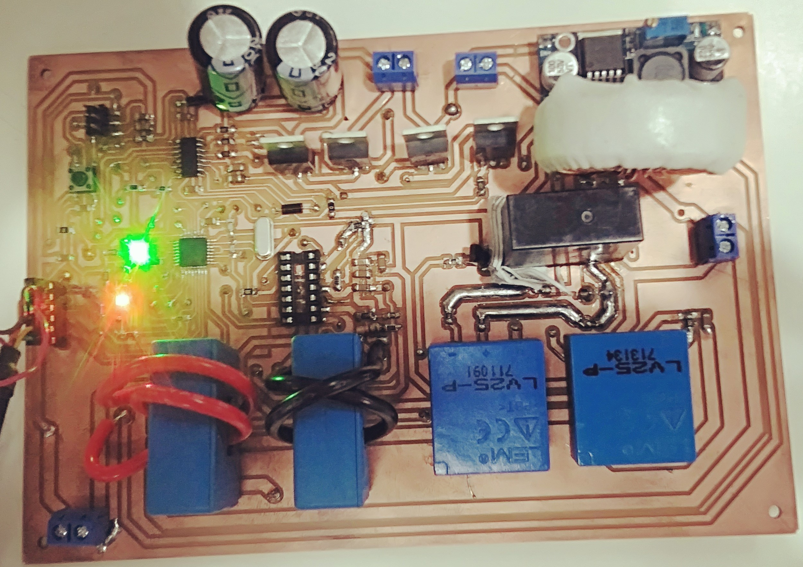

|
MICRO INVERTER PROJECTINSTRUCTOR: SIR ASIM ALI SAMEJO |
|---|
| Microinverter is a device that converts direct current (DC) to alternating current (AC). Microinverters contrast with conventional string and central solar inverters, in which a single inverter is connected to multiple solar panels. The output from several microinverters can be combined and often fed to the electrical grid. |
 |
| In recent years the use of solar energy in domestic as well as at large scale has been increased exponentially. The reason of the use of the solar energy at the domestic level is that one can get rid of the load shedding as well as of the electricity bills. While at large scale the governments are trying to achieve the “Paris Agreement” goal of lowering the global average temperature up to 2 degree Celsius until the end of this century. The governments are focusing on the clean energy. So the new power plants are mostly the renewable which are environment friendly. |
| The solar power plants are one of the main sources of this renewable energy. The solar energy is generated in DC form. While the home appliances runs on the AC electricity. Here the DC to AC converter is required. The more is the number of solar power plants, the more is the demand of the inverters. |
| Moreover, the inverters are also used in the electric vehicles, whose demand is also boosting in the recent years. Most of the countries are replacing the ordinary fuel vehicles with the electric vehicles to reduce the carbon emissions. |
| Consequently, the inverter is a very important device, which has the vast applications at domestic level as well as at industrial level. That is why we have selected this project of immense importance. |